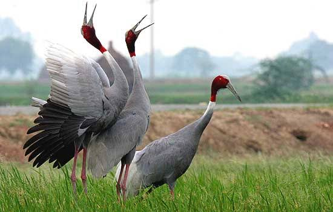

Sarus
Birds
The sarus crane is a large non-migratory crane found in parts of the Indian subcontinent, Southeast Asia, and Australia.
Scientific name: Grus antigone
Mass: 5.9 kg
Class: Aves
Family: Gruidae
Kingdom: Animalia
Phylum: Chordata
The sarus crane (Antigone antigone) is a large non-migratory crane found in parts of the Indian subcontinent, Southeast Asia, and Australia.
The tallest of the flying birds, standing at a height up to 1.8 m (5 ft 11 in), they are a conspicuous species of open wetlands in south Asia, seasonally flooded Dipterocarp forests in Southeast Asia, and Eucalyptus-dominated woodlands and grasslands in Australia.
The sarus crane is easily distinguished from other cranes in the region by the overall grey colour and the contrasting red head and upper neck.
They forage on marshes and shallow wetlands for roots, tubers, insects, crustaceans, and small vertebrate prey. Like other cranes, they form long-lasting pair bonds and maintain territories within which they perform territorial and courtship displays
that include loud trumpeting, leaps, and dance-like movements. In India, they are considered symbols of marital fidelity, believed to mate for life and pine the loss of their mates even to the point of starving to death.
Biology of Sarus
Distribution and habitat
The species has historically been widely distributed on the lowlands of India along the Gangetic plains, extending south to the Godavari River, west to coastal Gujarat, the Tharparkar District of Pakistan, and east to West Bengal and Assam.
The species no longer breeds in Punjab, though it winters regularly in the state.
Sarus cranes are rare in West Bengal and Assam, and are no longer found in the state of Bihar. In Nepal, its distribution is restricted to the western and central lowland plains, with most of the population occurring in Rupandehi, Kapilvastu, and Nawalparasi districts.
Taxonomy and systematics
This species was described by Linnaeus in 1758 and placed in the genus Ardea that included the larger herons. Edward Blyth published a monograph on the cranes in 1881, in which he considered the "sarus crane" of India to be made up of two species, Grus collaris and Grus antigone.
Most modern authors recognize one species with three disjunct populations that are sometimes treated as subspecies, although the status of one extinct population from the Philippines is uncertain.
The sarus cranes in India (referred to as A. a. antigone) are the largest, and in the east from Myanmar is replaced by a population that extends into Southeast Asia (referred to as A. a. sharpii).
The sarus cranes from the Indian subcontinent are well marked and differentiated from the south-eastern population by having a white collar below the bare head and upper neck, and white tertiary remiges.
The population in Australia (initially placed in A. a. sharpii (sometimes spelt sharpei but amended to conform to the rules of Latin grammar) was separated and named as the race A. a. gilliae, sometimes spelt gillae or even gilli), prior to a genetic analysis.
A 2005 genetic analysis suggested that these three populations are representatives of a formerly continuous population that varied clinally.
The Australian subspecies was designated only in 1988, with the species itself first noticed in Australia in 1966 and regarded as a recent immigrant.
Native Australians, however, differentiated the sarus and the brolga and called the sarus "the crane that dips its head in blood". Sarus cranes of the Australian population are similar to those in Southeast Asia in having no white on the neck and tertiary remiges, but are distinguished by a larger grey patch of ear coverts.
Ecology and behaviour
Unlike many other cranes that make long migrations, sarus cranes are largely nonmigratory and few populations make relative short-distance migrations. In South Asia, four distinct population-level behaviours have been noted.
The first is the "wintering population" of a small number of sarus cranes that use wetlands in the state of Punjab during winters.
The source of this population is unclear, but is very likely to be from the growing population in Himachal Pradesh. The second is the "expanding population" consisting of cranes appearing in new areas following new irrigation structures in semi-arid and arid areas primarily in Gujarat and Rajasthan.
The third is the "seasonally migratory" population, also primarily in the arid zone of Gujarat and Rajasthan. Cranes from this population aggregates in remaining wetlands and reservoirs during the dry summer, and breeding pairs set up territories during
the rainy season (July – October) remaining on territories throughout the winter (November – March). The fourth population is "perennially resident" and found in areas such as southwestern Uttar Pradesh, where artificial and natural water sources enable cranes to stay in the same location throughout the year. Migratory populations are also known from Southeast Asia and Australia.
In Southeast Asia, cranes congregate in few remnant wetlands during the dry season. In Australia, flocks aggregate on the Atherton Highlands, where agriculture is conducive for sarus cranes.
feeding
Sarus cranes forage in shallow water (usually with less than 30 cm (0.98 ft) depth of water) or in fields, frequently probing in mud with their long bills. In the dry season (after breeding), sarus cranes in Anlung Pring Sarus Crane Conservation Area, Cambodia, used wetlands with 8–10 cm of water.
They are omnivorous, eating insects (especially grasshoppers), aquatic plants, fish (perhaps only in captivity), frogs, crustaceans, and seeds.
Occasionally tackling larger vertebrate prey such as water snakes (Fowlea piscator), sarus cranes may in rare cases feed on the eggs of birds and turtles.
Plant matter eaten includes tubers, corms of aquatic plants, grass shoots as well as seeds and grains from cultivated crops such as groundnuts and cereal crops such as rice.
In the dry season, cranes flocking in Southeast Asian wetlands are in areas with an abundance of Eleocharis dulcis and E. spiralis, both of which produce tubers on whicn the cranes are known to feed.
Courtship and breeding
Sarus cranes have loud, trumpeting calls. These calls are, as in other cranes, produced by the elongated trachea that form coils within the sternal region.
Pairs may indulge in spectacular displays of calling in unison and posturing. These include "dancing" movements that are performed both during and outside the breeding season and involve a short series of jumping and bowing movements made as one of the pair circles around the other.
Dancing may also be a displacement activity, when the nest or young is threatened. The cranes breed mainly during the monsoons in India (from July to October, although a second brood may occur), and breeding has been recorded in all the months.
They build large nests, platforms made of reeds and vegetation in wet marshes or paddy fields. The nest is constructed within shallow water by piling up rushes, straw, grasses with their roots, and mud so that the platform rises above the level of the
water to form a little island. The nest is unconcealed and conspicuous, being visible from afar, and defended fiercely by the pair.